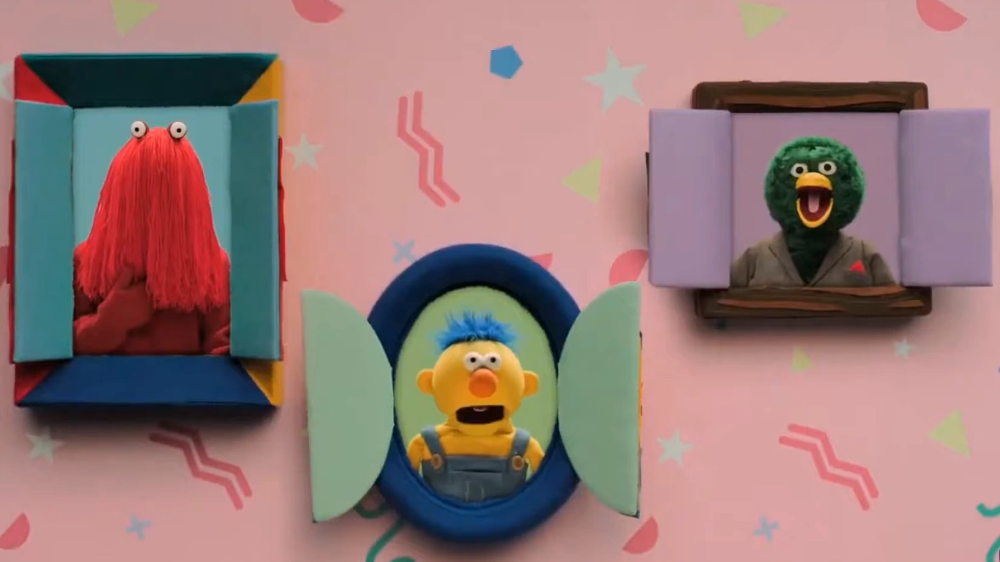

Première saison
Deuxième saison
Nos joyeux personnages !
Monsieur Rouge (Red Guy) est le plus grand des personnages et, comme les autres, n'a pas de nom en tant que tel. Il est le plus mature du trio et agit avec une certaine monotonie allant de paire avec sa voix presque sans émotion. Pessimiste du groupe et celui remettanr le plus les professeurs en question, il est néanmoins un membre important du trio, comme ses deux amis.
Monsieur Jaune (Yellow Guy) est souvent vu, et à raison, comme le plus simplet du trio. Plus proche d'un enfant avec toute la curiosité et la sensibilité que cela implique, Jaune est assez maladroit et du genre têtu.
Canard (Duck) est le nom fictif de ce dernier personnage principal. Il est le plus bavard du trio et bien souvent arrogant. Assez intelligent, il se... Passons.
Observons
Nous, vous, derrière vos écrans. Vous qui observez les apprentissages de ces petits êtres. Quel est votre rôle dans eurs histoires ? De qui prenez-vous la place ?
Avez-vous un favori ? Un que vous détestez ? Et quels pouvoirs avez-vous sur eux ? C'est sans importance non ? Le temps continue de passer mais vous pourre toujours les revoir, eux. Profitez, ils répéteront encore et encore. Tout se suit, après tout.